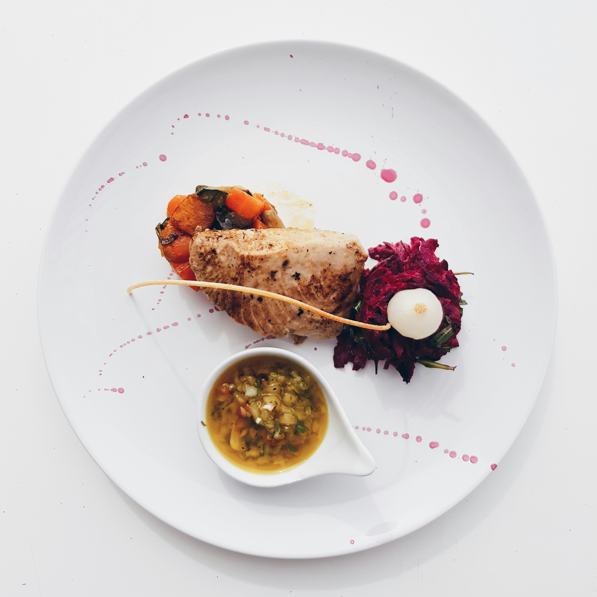
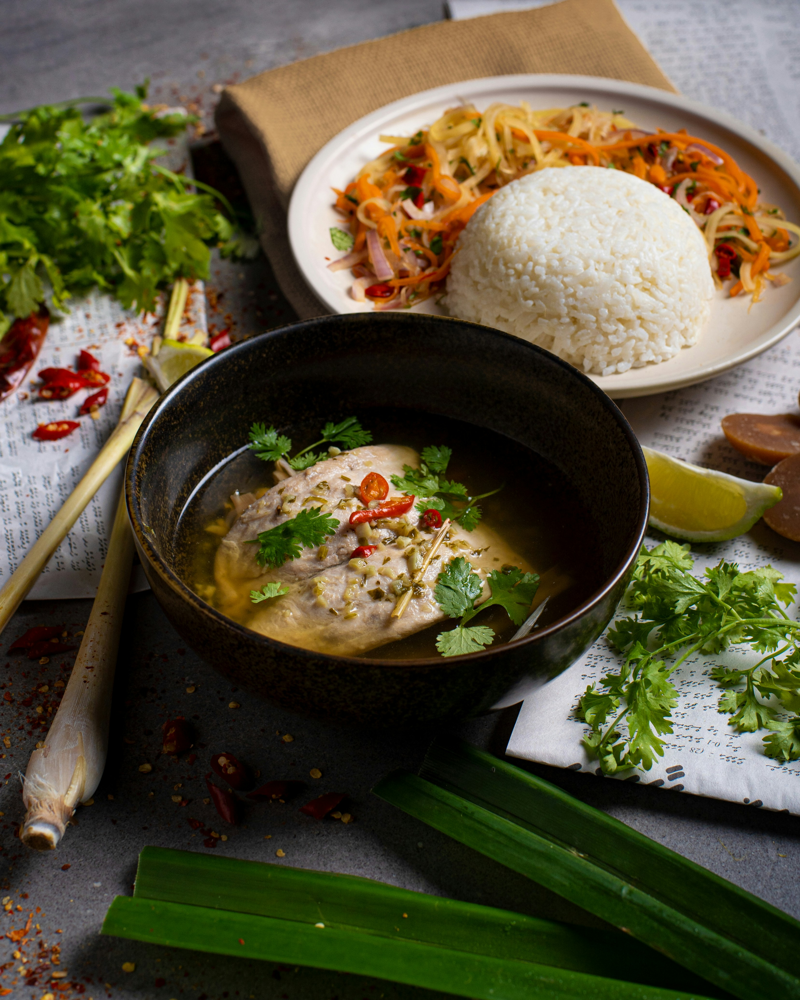

About
Us

Since 2026
Snack-Shack was founded in 2026 with a simple idea: create a place where people could enjoy fresh, satisfying food in a relaxed and welcoming environment. The idea started among a group of food lovers who believed that great meals don't have to be complicated to be memorable. What began as conversations about favorite comfort foods and late-night snacks soon grew into a vision for a restaurant that serves delicious, high-quality meals made with care. Snack-Shack was designed to be a spot where friends, families, and neighbors can gather, enjoy great flavors, and feel at home.


The
Restaurant
At Snack-Shack, the focus is on simple, satisfying food made with fresh ingredients and great attention to flavor. The menu offers a variety of tasty snacks, meals, and refreshing options that are perfect for quick bites or relaxed dining. Whether someone is stopping by for a quick snack or sitting down for a full meal, Snack-Shack aims to provide a place where people can enjoy good food, great service, and a comfortable environment every time they visit.